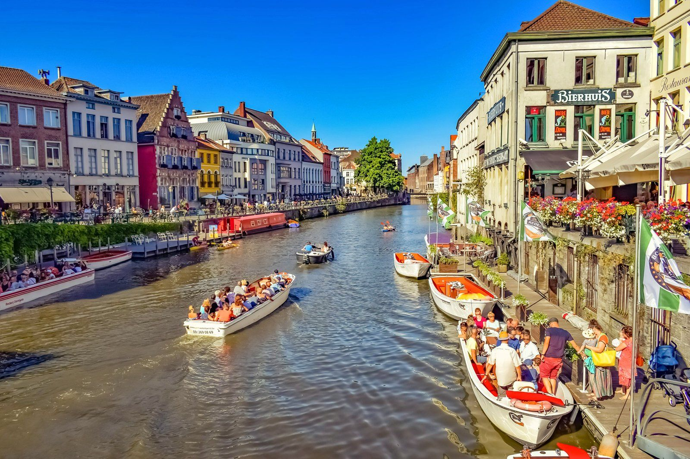

🎵 여행할 때 듣는 음악
브라우저 설정에 따라 자동재생이 차단될 수 있습니다. 이 경우 재생 버튼을 눌러주세요.
📸 기억에 남는 여행지

넓은 자연과 여유로운 분위기가 인상적이었던 여행지입니다.

아름다운 바다와 유럽의 거리를 감상할 수 있었습니다.

다양한 문화와 활기찬 도시 분위기를 경험했습니다.

맛있는 음식과 매력적인 거리 풍경이 기억에 남았습니다.
전통적인 분위기와 현대적인 도시 풍경이 함께 인상적이었습니다.

고풍스러운 건축물과 아름다운 거리 풍경을 감상했습니다.
🎬 크로아티아 여행 영상
크로아티아 여행 중 촬영한 풍경과 추억을 영상으로 기록했습니다.